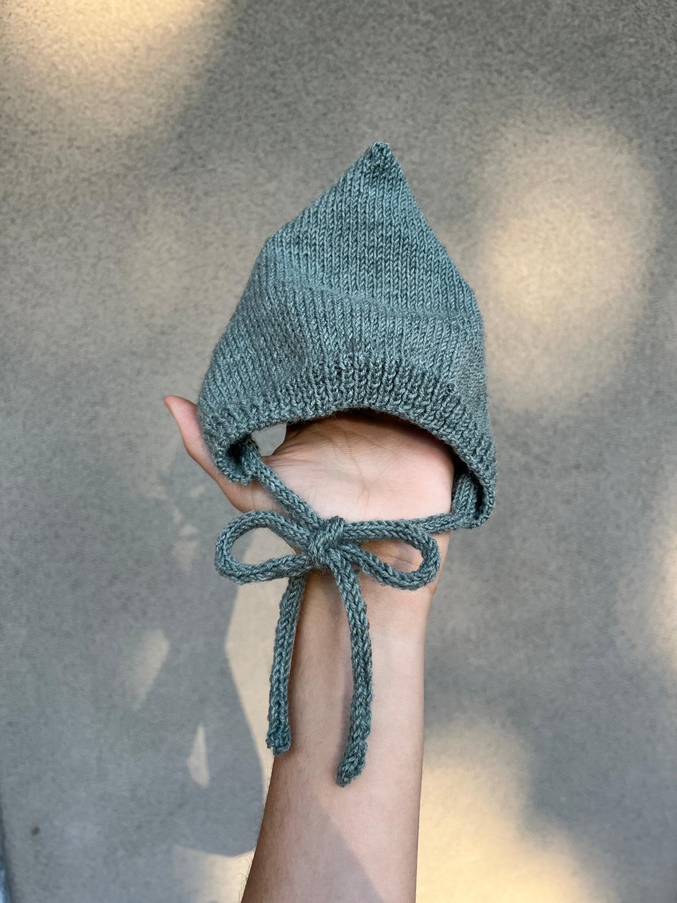

Cappellino Baby
Morbido e caldo, pensato per la pelle delicata dei più piccoli.
Fatti a mano, con amore
Ogni filo intreccia una piccola storia. Sfoglia i progetti e gira le schede per scoprire i dettagli della lavorazione.
Progetto 1 di 2

Morbido e caldo, pensato per la pelle delicata dei più piccoli.

Lavorazione classica per tenere i piedini al caldo durante l'inverno.
Puoi scorrere con le frecce o con un gesto laterale ♡